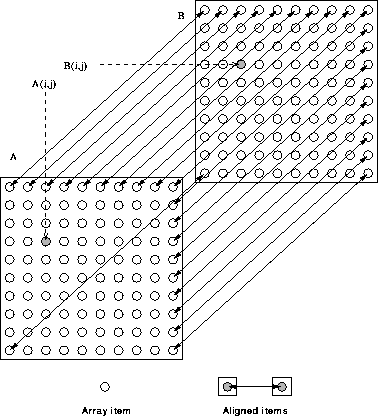

Given,
REAL, DIMENSION(10,10) :: A, B !HPF$ ALIGN A(:,:) WITH B(:,:)
This is much the same as the previous example except that we are
aligning 2D arrays. Each array is aligned dimension by dimension. The
net effect of this alignment is that A(i,j) and B(i,j)
reside on the same processor. Effectively, this says:  i, j,
elements A(i,j) and B(i,j) are local.
i, j,
elements A(i,j) and B(i,j) are local.
The following align statement is equivalent but does not imply shape conformance:
!HPF$ ALIGN A(i,j) WITH B(i,j)
Now try this question 
Figure 26 is supposed to show how elements A(1,1) and B(1,1) are aligned with each other. Alignment between every element of the first row of A and the first row of B is shown.

Figure 26: Visualisation of 2D Alignment
The two shaded blobs are also aligned and are therefore resident on the same processor.
This alignment is suitable for,
A = A + B + A*B ! all local